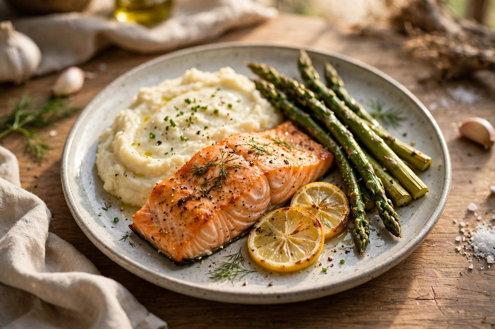

Home › Guides
Low-Carb Dinner Recipes: 7 Easy Weeknight Meals

Dinner is the easiest meal to make low-carb, because it is the meal where protein and vegetables naturally take centre stage. You do not need special ingredients or complicated recipes. You need a piece of protein, a pan, and some vegetables. These seven dinners all take under thirty minutes, and they all use ingredients you can find in any supermarket.
Salmon and broccoli
Pan-fry a salmon fillet in butter for three minutes a side, and serve it with roasted broccoli and a squeeze of lemon. The salmon provides protein and omega-3 fats, the broccoli adds fibre and vitamins, and the whole meal has about 6 grams of net carbs.
Vary it with a mustard and herb crust, or a soy and ginger glaze, but check the glaze for sugar. Serve with cauliflower rice if you want something to soak up the sauce.
Chicken thighs and courgette
Roast bone-in chicken thighs with courgette, peppers, and garlic in one tray. The chicken skin crisps, the vegetables soften, and the juices make their own sauce. It takes five minutes to prepare and thirty minutes in the oven.
Add pesto or a spoonful of harissa for flavour, and serve with a green salad. Chicken thighs are cheaper than breasts and harder to overcook, which makes them ideal for weeknights.
Beef stir-fry and cauliflower rice
Stir-fry strips of beef with peppers, mushrooms, and pak choi in a hot pan with soy sauce, ginger, and garlic. Serve it over cauliflower rice, which you can make by grating cauliflower and frying it for five minutes.
Cauliflower rice absorbs sauce well and has about 3 grams of net carbs per 100 grams, compared with 28 grams for white rice. It is the single most useful swap in low-carb cooking.
Pork, lamb, and vegetarian options
Pork chops with green beans and garlic butter take fifteen minutes and need only one pan. Lamb chops with mint yoghurt and roasted aubergine are a weekend treat that still fits a low-carb plan.
For a vegetarian dinner, try a cauliflower and cheese bake, or a mushroom and spinach frittata. Eggs, cheese, and vegetables make a complete meal without meat, and they are cheap and quick.
A week of low-carb dinners
A week of dinners can be built from the recipes in this guide. Monday: salmon with broccoli. Tuesday: chicken thighs with courgette. Wednesday: beef stir-fry with cauliflower rice. Thursday: pork chops with green beans. Friday: baked cod with asparagus. Saturday: lamb chops with aubergine. Sunday: a mushroom and spinach frittata.
Cook a little extra each night, and use the leftovers for lunch the next day. Shop once for the week, and keep the plan on the fridge. A week of simple dinners, cooked from ordinary ingredients, is the easiest way to eat low-carb without thinking about it.
Keep the week flexible. If a night goes wrong, swap in an omelette or a plate of eggs and vegetables, which takes ten minutes and uses ingredients you already have. If you have guests, double the salmon or the chicken and add an extra vegetable, rather than cooking something different. A low-carb dinner plan should bend without breaking, and a simple backup meal is the easiest way to make sure it does.
Frequently Asked Questions
What is a quick low-carb dinner?
Salmon with broccoli, chicken thighs with vegetables, or a beef stir-fry with cauliflower rice. All take under 30 minutes.
What can I eat instead of rice?
Cauliflower rice is the best swap: about 3 g of net carbs per 100 g. Courgette noodles are another good option.
How do I make cauliflower rice?
Grate cauliflower, then fry it in butter or oil for 5 minutes with salt. Do not overcook it, or it turns mushy.